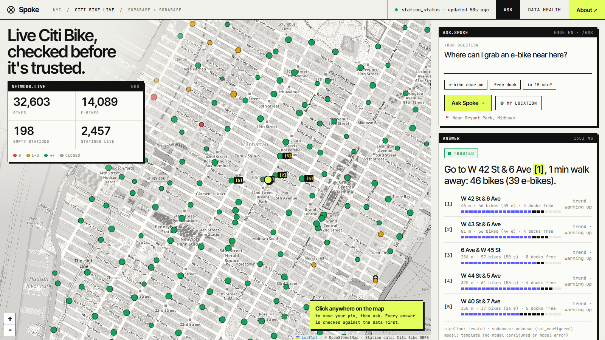
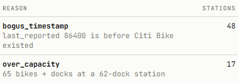

Spoke pulls the Citi Bike feed into Supabase every minute with pg_cron and an edge function, quarantines the rows that are wrong, and won't answer a rider from data Sodabase can't vouch for.

Citi Bike's public feed powers hundreds of apps: about 2,500 stations and a record 44.3 million trips in 2024. It's good data, but not clean data. One pull on 4 November, before we wrote any app code:
last_reported: 86400 is a placeholder for 2 January 1970. Pass it through and every freshness check breaks.
"31 bikes + docks at a 22-dock station." Counts that can't physically be true.
Marked open, with nothing reported in over 24 hours. Is the dock empty, or is the data dead?
The 5 nearest stations, live counts and the 60-minute trend from status_snapshots, each cited as [n].
A failed run in the last 15 minutes, a partial batch, or a slightly old table: Spoke answers and says why.
Live data over 3 minutes old, no runs, or Sodabase says untrusted: no model call, just the reasons.
| rule | rejects |
|---|---|
| bogus_timestamp | reported before Citi Bike existed (May 2013) |
| over_capacity | bikes + docks > capacity + 2 |
| future_timestamp | more than 5 min ahead |
| unknown_station | status without a station |
| invalid_count · ebikes_exceed_bikes | negative, fractional, impossible |
| invalid_flag · duplicate_station | flags not 0/1, ids twice |
| outside_service_area · missing_name | station list basics |

CHECK constraints repeat the critical rules. Every run, even a failed one, writes an ingest_runs row, so a silent pipeline shows up as stale data.ingest_runs and system_pulse insert one row a minute; ~1,800 stations re-report in station_status. A stopped cron shows within minutes.
History is insert-only; live tables are upserted in place. A row-count drop is always a real problem.
Schema changes only through migrations. Bad values are blocked twice: in TypeScript, then in Postgres.
check_trust on public.station_status. If Sodabase says untrusted, Spoke won't answer, however healthy its own pipeline looks.github.com/ParasAdlakha/spoke · mirror at github.com/HarshitaAdlakha/spoke